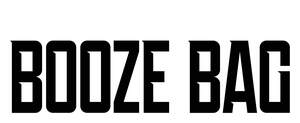

Trade Mark Journal No.2025/039 26 September 2025
UK00004255857 28 August 2025 (18,21)

- Class 18
- Tote bags; Duffel bags; Duffle bags; Bags; Carry-all bags; Grocery tote bags; Drawstring bags; Cross-body bags; Crossbody bags; Carry-on bags; Sling bags; Duffel bags for travel; Shoulder bags; Belt bags and hip bags; Nose bags [feed bags]; Bags (Nose -) [feed bags]; Clutch bags; Carrying bags; Belt bags; Cloth bags; Leather bags; Canvas bags; Garment bags; Canvas shopping bags; Reusable shopping bags; Bags [envelopes, pouches] of leather, for packaging; Bags [envelopes, pouches] for packaging of leather; Bags [envelopes, pouches] of leather for packaging; Hand bags; Bum bags; Leather bags and wallets; Travel bags; Bags for travel; Waist bags; Waist pouches; Waist packs; Belt pouches; Bags (Garment -) for travel.
- Class 21
- Drinking bottles; Bottles; Water bottles; Drinking goblets; Drinking flasks; Drinking cups; Tumblers for use as drinking glasses; Straws for drinking; Drinking straws; Glasses [drinking vessels]; Plastic water bottles; Tumblers [drinking vessels]; Drinking straw dispensers; Water bottles for bicycles; Glasses, drinking vessels and barware; Bottle coolers; Drinking receptacles; Empty water bottles for bicycles; Drinking troughs; Plastic water bottles [empty]; Drinking flasks for travellers; Flasks for travellers (Drinking -); Drinking flasks [for travellers]; Bottle buckets; Drinking vessels; Dispensers for liquids for use with bottles; Plastic bottles; Covers for water bottles; Water bottles sold empty; Refrigerating bottles; Bottles (Refrigerating -); Bottle coolers [receptacles]; Reusable bottles; Drinks containers; Insulated bottles [flasks]; Water bottles for bicycles, sold empty; Wine bottle cradles; Sports bottles [empty]; Plastic containers for dispensing drink to pets; Reusable plastic water bottles sold empty; Biodegradable rice straws for drinking; Biodegradable bottles; Bottle gourds; Gourds (Bottle -); Coolers for wine; Wine coolers.
BoozeBag Ltd